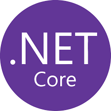
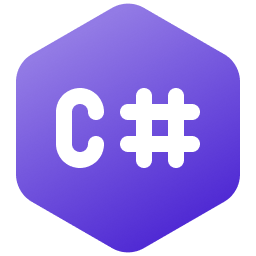
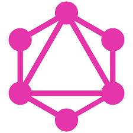
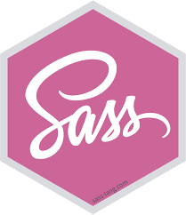
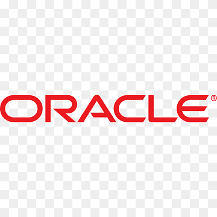
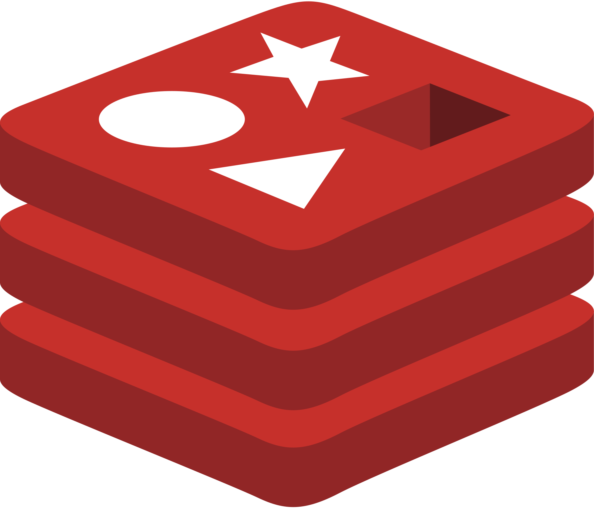
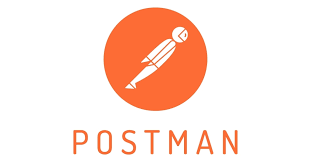
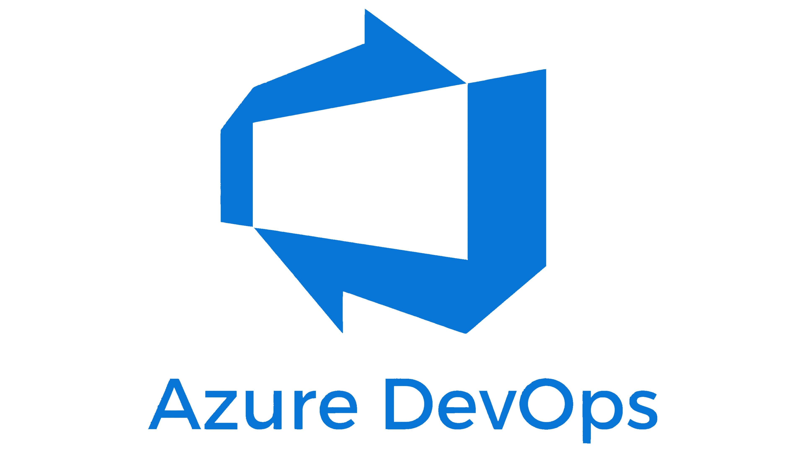

Senior Software AI Engineer with over 16 years of experience building enterprise software across AI, backend, frontend, cloud, and data platforms. Current focus on GenAI engineering: RAG systems, hybrid search, agentic AI workflows, Azure AI Foundry, Azure OpenAI, Azure AI Search, LangGraph, LangChain, FastAPI, ASP.NET Core, React, TypeScript, Python, Terraform, Docker, and GitHub Actions. Strong background delivering secure, maintainable, production-ready systems for professional workflows in the US market.
LATEST JOB EXPERIENCES
Wolters Kluwer - Sr Software AI Engineer
Concord / Enterprise Tax Technology Platform
2025 - present
Building production GenAI and AI-assisted software for enterprise tax professionals. I design and implement RAG pipelines, hybrid keyword/vector retrieval, citation-aware responses, streaming chat flows, and agentic advisory workflows using Azure AI Search, Azure OpenAI, Azure AI Foundry, LangGraph, LangChain, FastAPI, ASP.NET Core, React, TypeScript, Python, PostgreSQL, Docker, Terraform, and GitHub Actions.
Technologies:
RAG, Agentic AI, Azure AI Foundry, Azure OpenAI, Azure AI Search, LangGraph, LangChain, FastAPI, ASP.NET Core, React, TypeScript, Python
PostgreSQL, Docker, Terraform, GitHub Actions, Azure App Service, Azure Functions, Key Vault, Managed Identity, App Configuration
Healthcare technology platform supporting clinical and operational workflows. I created Angular components, developed ASP.NET Core Web APIs with Entity Framework Core and SQL Server, implemented Node.js GraphQL mutations with Apollo and Prisma, and delivered internationalization with ngx-translate for a global user base. I supported an application used by 32K users.
Technologies:
RabbitMQ, SQL, MySQL, ASP.NET Core, Entity Framework, C#, Angular, SignalR, Node.js, Express, Apollo, Prisma, JavaScript, TypeScript, Azure DevOps
Distributed Systems, Microservices, Amazon S3, Amazon EC2, Amazon EKS, Amazon RDS, Git
It is a Petroleum company with loading, inventory, shipping modules. Senior Software Engineer. I was responsible for coding Web APIs using Identity, Entity Framework Core, and Oracle. We use NUnit to do unit tests. The challenge in this project was migrating the features from a legacy power builder application to the new react application.
Technologies:
Oracle, Azure devops, ASP.NET CORE, Entity Framework, NUnit, C#, Reactjs, Axios, Theme UI, Karma, Git
Workflow to register building whether sensors settings to capture all the information from the sensors and generate the reports for the client. Senior Software Engineer. I was responsible for modeling the database to respond to requirements. I developed the new admin interfaces in ReactJs and created the API actions in the Nodejs backend
Technologies:
Amazon RDS, Nodejs, Express, Reactjs, Axios, ThemeUI, CSS, Karma, Git
Human Resources module, accountancy module. Senior Software Engineer. I was responsible for modeling the database to respond to requirements. I had to develop the new interfaces in Angular, create the API actions in the ASP.NET CORE backend, and create reports.
Technologies:
Azure Devops, Azure SQL, Azure App Services, ASP.NET CORE, Entity Framework, NUnit, C#, Angular, html5, css, Git
Brainshark is a company focused on sales training through e-learning courses. I was responsible for migrating the SSO module from Ping to our custom module, utilizing Sustainsys as the primary library. I also developed a new SSO settings module using Angular. Additionally, I created a new e-learning dashboard in Angular and designed the ETL process to synchronize our OLAP database with the OLTP database. Furthermore, I enhanced reporting capabilities by leveraging Microsoft Reporting Services.
Technologies:
Azure DevOps, SQL, CosmosDB, Azure Key Vault, Azure DataFactory, Azure AppService, Azure Functions, RabbitMQ
ASP.NET CORE, Entity Framework, NUnit, C#, Angular, html5, css, Git, ETL, Reporting Services
Senior Software Engineer. I was responsible for the conception of the system from scratch. I dealt with all requirements and development with a team for three years. The challenge was to design a scalable database model to support all the requirements and the real test cases that the training had. I build dynamic and complex forms to deal with examinations of 50 or 100 questions with his alternatives. 5k Users
Technologies:
Git, SQL, MySql, ASP.NET, Entity Framework, c#, Javascript, Html5, CSS, Azure App Service, Azure SQL, Azure blob storage
Belcorp is a major international company responsible for prominent beauty brands such as Ésika, L'Bel, and Cyzone. I worked in the Planning area, developing software to manage ad-hoc workflows effectively. I created custom software for managing third-party offers, delivering complex reports as the final output. My role involved integrating the backend with AS400 to enable real-time data queries. Additionally, I contributed to an ASP.NET MVC project for custom project management and developed a custom page for the company's SharePoint site.
Technologies:
Git, SQL, ASP.NET, Entity Framework, c#, Javascript, Html5, CSS, Reporting Services, WCF
ElProyectoWeb - Software Developer
Lima, Peru
2010 - 2011
In this company, I developed features for public websites. I designed and implemented their invoicing system. I created private file storage solutions for clinics. Additionally, I developed an ad-hoc workflow system for manufacturing processes.
Technologies:
Visual SourceSafe, ASP.NET, SQL Server, MyAccess, C#, Javascript, HTML, Public Web Hosting
Skills
AI Engineering:
GenAI
RAG
ReAct
Agentic AI
LangGraph
LangChain
Azure AI Foundry
Azure OpenAI Models
Azure AI Search
Embeddings
Vector Search
Hybrid Search
Semantic Kernel
Structured Outputs
Prompt Engineering
AI Evaluation
Document Intelligence
Production AI stack includes Azure AI Foundry and Azure OpenAI GPT/embedding model deployments, Azure AI Search indexes, text embeddings, hybrid retrieval, citation-aware responses, prompt systems, structured outputs, and agentic workflows for enterprise RAG platforms.
Backend:

NetCore
Asp.net
Entity Framework

CSharp(c#)
Azure Functions
Node.Js

GraphQL
Express
Prisma
Javascript
RabbitMQ
I build production AI and distributed systems using clean architecture, RAG pipelines, hybrid search, prompt and agent workflows, REST APIs, message brokers, and testable service boundaries. I focus on maintainable code, secure cloud configuration, and practical AI features that support real professional workflows.
Frontend:
Angular
React
Javascript
Typescript
PostCss

Sass
Axios
Bootstrap
Redux
React Hook Forms
Experience developing SPA and AI-assisted workflows with complex state management, streaming responses, document/PDF experiences, markdown rendering, reusable components, native HTML interactions, and styling with CSS, Sass, and PostCSS.
Database:
SQL Server

Oracle

Mysql
CosmosDB

Redis

SSRS
ETL
Experience creating complex OLTP and OLAP databases, including tables, relationships, constraints, stored procedures, views, and functions. Proficient in migrating SQL logic to backend logic. Skilled in performing migrations using ETL processes, creating reports with Reporting Services, and designing collections in CosmosDB
Testing:
Jasmine
Nunit

Postman
Experience in creating automated test at all levels of the test piramid (Unit, Integration tests).
Cloud CI/CD:
AWS
Azure

Azure DevOps
Experience using Azure and AWS cloud services, with current focus on Azure AI workloads. I work with Azure AI Foundry, Azure OpenAI, Azure AI Search, Azure App Service, Azure Functions, Azure Key Vault, managed identities, App Configuration, Docker, Terraform, GitHub Actions, and CI/CD pipelines.